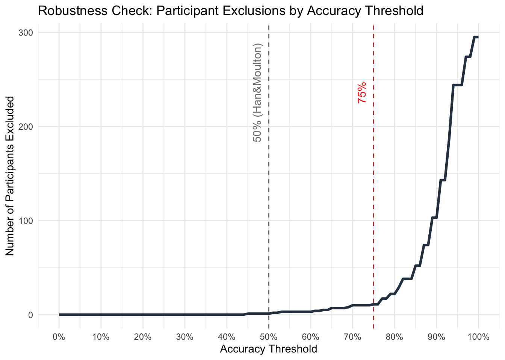
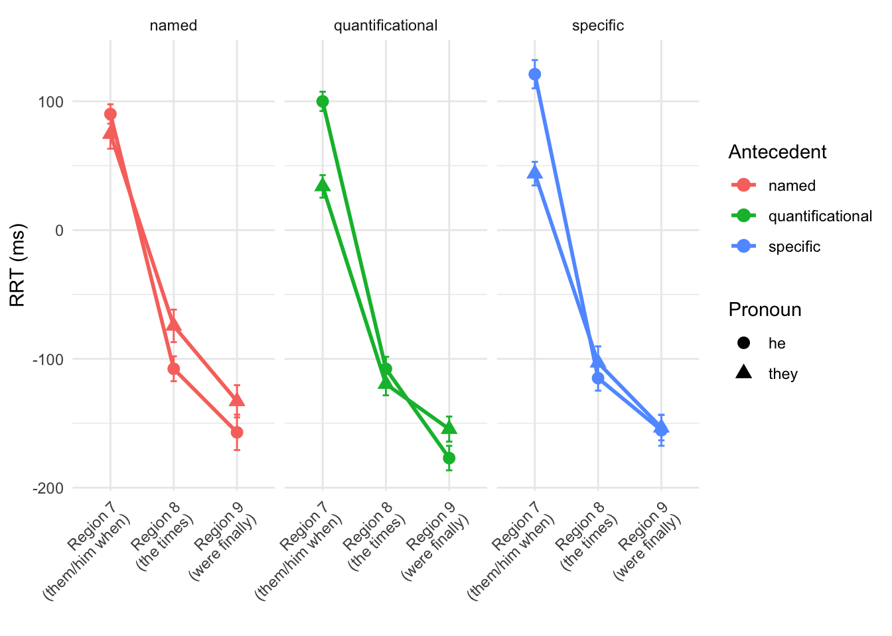
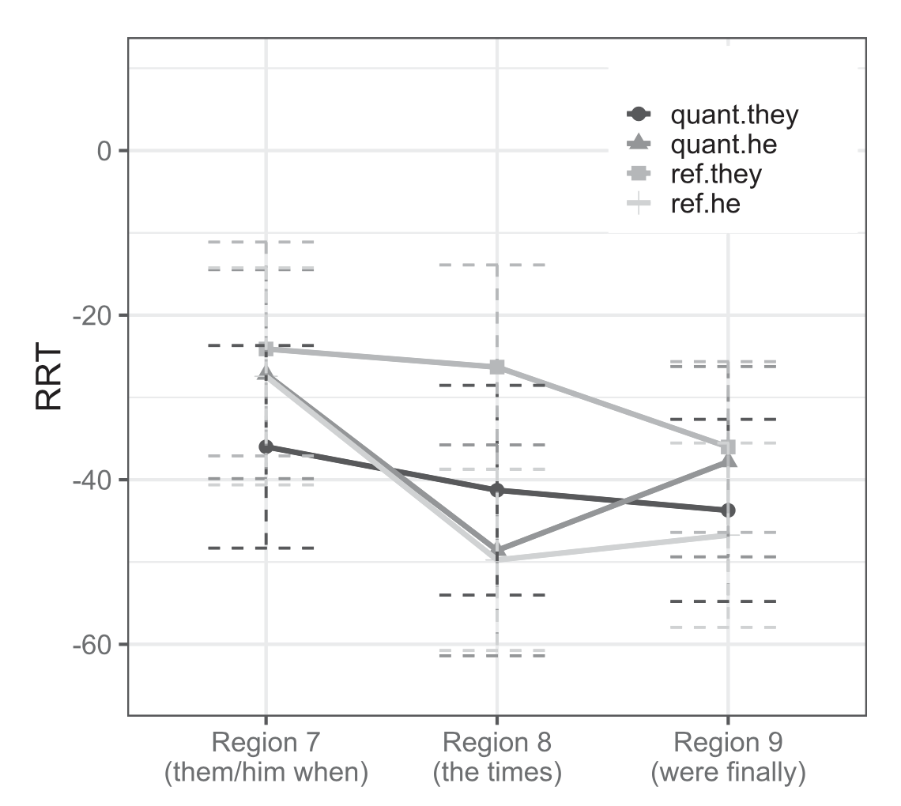

Replication of Processing bound-variable singular they by Chung-Hye Han & Keir Moulton (2022, Canadian Journal of Linguistics)
Introduction
This experiment replicated work from Han and Moulton (2022) on the processing of singular they. In previous work (e.g., Conrod 2019), bound-variable singular they (1) was found to be rated as more acceptable than referential singular they (2).
Bound they: Every child loves their mother.
Referential they: My friend’s child loves their mother.
Han and Moulton (2022) built on this work, conducting a range of experiments that explored the relationship between bound vs. referential singular they and gender specificity of the antecedent as it relates to ease of processing a sentence. Overall, they found that bound-variable singular they with a gendered antecedent has a processing advantage over both referential singular they and bound-variable singular they without a gendered antecedent. The experiment that I conducted attempted to replicate one of a broader range of experiments that Han and Moulton ran (their experiment 1b), aiming to (dis)confirm their finding that bound-variable and referential singular they do not differ in reading time and that both incur a processing cost in comparison to he. This experiment also introduced an additional type of antecedent that Han and Moulton did not consider, shown in (3), and asked how he and they pronouns were processed with such named antecedents.
- Referential and named they: Alex loves their mother.
Throughout the remainder of this paper, “referential” is used to refer to antecedents such as in (2) (crucially excluding named antecedents like (3), even though these too are referential), and “named” is used to refer to antecedents such as in (3).
Methods
Power Analysis
Han and Moulton report a t-value of 2.34 (p. 285) with 193 participants considered in their calculations. The Cohen’s d is estimated as \(d = \frac{t}{\sqrt{n}} = \frac{2.34}{\sqrt{193}} = 0.168\). From this, power can be estimated as follows:
Planned Sample
The results of the power analysis suggest that at least 281 participants should be included in this replication study. I propose collecting data from 300 people to be conservative and to allow exclusions of participants with low scores on comprehension questions or unrealistically fast reading times (following Han and Moulton’s exclusion criteria).
Materials
The original experiment materials cross ‘two two-level factors, Antecedent (QUANT vs. REF) and Pronoun (THEY vs. HE), yielding four experimental conditions’ (Han and Moulton 2022, p. 283). This replication study introduces a third level in the Antecedent factor (QUANT vs. REF vs. NAMED), yielding six total experimental conditions. ‘The test sentences in [this experiment] were made to be [long] so that the sentences do not end with the target region containing the critical pronoun. Also, the definite description in the embedded specificational clause began with the one who to ensure a singular interpretation of the post-copula pronoun. Excluding the context sentences, the target sentences were divided into ten regions, with region 1 containing the antecedent and region 7, the target region, containing the critical pronoun, as illustrated [(5)].’ (Han and Moulton 2022, p. 283).
- Only one competitor could win the race.
/1 Every competitor /2 thought that /3 the one who /4 would win /5 the race /6 would be /7 them when /8 the times /9 were finally /10 announced. QUANT.THEY
/1 Every competitor /2 thought that /3 the one who /4 would win /5 the race /6 would be /7 him when /8 the times /9 were finally /10 announced. QUANT.HE
/1 The youngest competitor /2 thought that /3 the one who /4 would win /5 the race /6 would be /7 them when /8 the times /9 were finally /10 announced. REF.THEY
/1 The youngest competitor /2 thought that /3 the one who /4 would win /5 the race /6 would be /7 him when /8 the times /9 were finally /10 announced. REF.HE
/1 Avery /2 thought that /3 the one who /4 would win /5 the race /6 would be /7 them when /8 the times /9 were finally /10 announced. NAMED.THEY
/1 Avery /2 thought that /3 the one who /4 would win /5 the race /6 would be /7 him when /8 the times /9 were finally /10 announced. NAMED.HE
(Adapted from Han and Moulton 2022, (13))
Procedure
3031 native English users participated in this study online via Prolific. Participants self-reported to be native users of English in their demographics on Prolific. Each participant received $3.20 as compensation upon completion of the experiment. Thirty item sets like (5) were distributed over six lists in a Latin-square design. ‘In addition, each list contained a set of [30] fillers. The sentences were presented on [Prolific] in a uniquely generated random order for each participant, using the moving-window paradigm (Just et al. 1982). After reading the context sentence, participants advanced to the next region by pressing on the space bar. No region could be displayed more than once. After each experimental sentence was read, a comprehension question was presented, which could be answered by pressing one key for ‘yes’ or another key for ‘no’. The comprehension questions tested participants’ understanding of the sentence, but not their interpretation of the critical pronoun. The comprehension question for the item in [(5)] is in [(6)]’. (Adapted from Han and Moulton 2022, pp. 283-284)
- Was there going to be a winner of a race? (Han and Moulton 2022, (14))
Analysis Plan
Participants with low comprehension question response score (<50%2) and extremely fast reading speed per region (<50ms) were excluded. Additionally, reading times of a region that were 10 standard deviations above the mean were removed, in order to exclude extreme outliers from analysis. The regions of analysis are Region 7 (the target region), Region 8 (the spillover region), and Region 9. Residual reading times (RRTs) were calculated using character length from the entire dataset (including fillers) to estimate the reading time for each region for each participant (Ferreira and Clifton 1986, Trueswell and Tanenhaus 1994, Phillips 2006). Each region’s RRTs were analyzed with a mixed model, with a random-effects structure: RRT ∼ Antecedent * Pronoun + (1+Antecedent * Pronoun|Participant) + (1+Antecedent*Pronoun|Item)3. (Adapted from Han and Moulton 2022, p. 284).
My addition to this experiment – exploring three different types of antecedent instead of two – does not require any changes to the analysis conducted in the original experiment.
Differences from Original Study
The sample size of the replication study is larger than the original study (303 participants vs. 193 participants), following the justification outlined above. The setting is similar: the replication was conducted online via Prolific, while the original study recruited participants via Amazon Mechanical Turk and directed them to the experiment on Ibex Farm. The procedure is comparable, although different numbers of critical and filler trials were included because of the additional variation that my replication explores. The original experiment included 20 critical trials (5 per condition) and 40 filler trials; my replication includes 30 critical trials (5 per condition) and 30 filler trials (the number of filler trials was decreased to save money by making the experiment slightly shorter). Finally, filler trials that used gendered names in the original experiment were modified to instead use gender-neutral names in the replication experiment. This was because gender-neutral names were also used in critical trials of the replication experiment (necessarily gender-neutral to be compatible with both he and they pronouns), so using gender-neutral names in the fillers as well made these stimuli minimally different from the critical stimuli. None of these changes are expected to affect results4, although the additional critical conditions of course introduce additional data to be analyzed (with the analysis plan exactly matching the plan for the rest of the data).
Methods Addendum (Post Data Collection)
Actual Sample

303 participants were recruited on Prolific. (An apparent Prolific glitch led to collection of data from 303 rather than the intended 300 participants, and these additional data were included in analysis.) All participants were native English speakers, as reported in their Prolific demographics. The age of the participants ranges from 18-70 years (mean: 37.51, standard deviation: 12.7). Participants who did not meet threshold accuracy on comprehension questions were excluded. The accuracy threshold was read off of the above plot, with 75% accuracy chosen as a reasonable threshold. This exclusion resulted in the exclusion of 11 participants. Participants were also checked for an unreasonably fast reading speed per region (<50ms), although no participants met this exclusion criterion. Finally, reading times of a region that were 10 standard deviations above the mean were removed, in order to exclude extreme outliers from analysis. This resulted in excluding 0.19% of the observations from the data.
Differences from pre-data collection methods plan
The original analysis plan suggested modeling the data with the following model: RRT ∼ Antecedent * Pronoun + (1+Antecedent * Pronoun|Participant) + (1+Antecedent*Pronoun|Item). However, such a model was found to have a singular fit on all regions that it was applied to, and the following simpler model was used instead: RRT ~ Antecedent * Pronoun + (1 | Participant) + (1 | Item). This was the maximal model that converged.
Results
Confirmatory analysis
Mean raw reading times and residual reading times (RRTs) are reported in the below table. These represent reading times for all data, regardless of whether the comprehension question was answered correctly. The regions of analysis are Region 7 (the target region), Region 8 (the spillover region), and Region 9. As noted above, RRTs were calculated using character length from the entire dataset (including fillers) to estimate the reading time for each region for each participant. The graph below summarizes mean RRTs by condition for the regions of analysis. (Adapted from Han and Moulton 2022, p. 284)
In region 7 (the target region where the critical pronoun appears), the analysis showed a main effect of Pronoun such that they pronouns were read more rapidly than he pronouns (p < 0.001) and a significant interaction between Pronoun and Antecedent (p = 0.0017). The following findings emerged within the Pronoun condition. There was no significant effect of quantificational vs. referential antecedent on the processing of they or of he. Interestingly, however, they pronouns with a named antecedent differed significantly from they pronouns with other antecedent types. they with a named antecedent was read more slowly than with a quantificational antecedent (p = 0.0058) and more slowly than with a referential antecedent (p = 0.037). he pronouns only significantly differed with a named vs referential antecedent, where he with a named antecedent was read more rapidly than with a referential antecedent (p = 0.048). Within the Antecedent condition, he was read more slowly than they with quantificational (p < 0.001) and referential (p < 0.001) antecedents, although no statistically significant difference between pronouns emerged in the Named antecedent condition.
In region 8 (the region immediately following the critical pronoun region), no significant main effect or interaction emerged (although the interaction between Pronoun and Antecedent was nearly significant, p = 0.061).
In region 9 (the second region following the critical pronoun region), there was a main effect of Antecedent, such that pronouns referring to a named antecedent were read more slowly than pronouns referring to a quantificational antecedent (p = 0.022).
| Antecedent | Pronoun | 7 | 8 | 9 | 7 | 8 | 9 |
|---|---|---|---|---|---|---|---|
| quantificational | they | 515 (10) | 529 (9) | 527 (9) | 34 (9) | -119 (9) | -154 (10) |
| quantificational | he | 507 (8) | 538 (9) | 515 (8) | 100 (8) | -108 (9) | -177 (10) |
| specific | they | 525 (11) | 545 (15) | 536 (10) | 44 (9) | -103 (13) | -153 (10) |
| specific | he | 529 (12) | 536 (11) | 530 (11) | 121 (11) | -115 (10) | -155 (12) |
| named | they | 555 (14) | 574 (14) | 556 (14) | 75 (11) | -74 (13) | -133 (13) |
| named | he | 498 (9) | 531 (11) | 535 (14) | 90 (8) | -108 (10) | -157 (14) |
Table 1: New experiment’s mean raw reading times (SE) and mean RRTs (SE) in ms


Exploratory analyses
Any follow-up analyses desired (not required). Maybe include age stuff.
Discussion
Summary of Replication Attempt
This study found that regardless of whether an antecedent is quantified or referential, readers slow down less when encountering the pronoun they than when encountering the pronoun he. This result was not a replication of the result from Han and Moulton’s original study. In fact, their study found the exact opposite: readers slowed down more when encountering they than when encountering he (and for Han and Moulton, this slowdown appeared not in the region where the critical pronoun was shown as it did for my participants, but in the following region that is referred to as Region 8 in the above discussion). One of Han and Moulton’s results, however, did replicate. In both their original study and this follow-up study, reading time of singular they was not significantly different for quantificational vs. referential antecedents.
In comparing the results of each study, it is also worth noting that in Han and Moulton’s original study, their participants read faster than average in all of regions 7-9 (as shown by the negative RRTs for these regions, ranging from about 25 to 50 ms faster than average across regions and conditions). In contrast, participants in this follow-up study slowed down drastically when encountering the critical pronoun in region 7 (reading about 40 to 100 ms slower, depending on condition) and then sped up drastically in regions 8 and 9 (reading about 75 to 175 ms faster, depending on condition and region). This suggests that participants in my study incurred an overall processing cost associated with any pronoun, while Han and Moulton’s participants did not show evidence of incurring a similar processing cost.
By introducing named antecedents, an additional condition that the original study did not include, this study also showed interesting results regarding how pronouns are processed with these antecedents. Most notably, readers slowed down similar amounts when encountering they vs he in the named condition, showing that whatever advantage they had over he in the referential and quantificational antecedent conditions disappeared in this condition.
Commentary
The failure to replicate Han and Moulton’s original primary result is itself an interesting result. Various possible explanations for the difference between the studies exist. Perhaps participants differed from those in the other study in some systematic way, giving rise to the difference in reading times. However, such a hypothesis is extremely difficult to test: participants in both studies were native English speakers with similar age ranges and average ages, and Han and Moulton did not report additional demographic information about their participants, so no further potential differences can be checked. Another possible explanation for the discrepancy between studies would be that processing of pronouns truly has changed significantly in the time between these studies. Han and Moulton’s study was published in 2022 (with data collected an unknown length of time before publication), and data for this follow-up study was collected in May 2026. This is not a significant gap (perhaps less than four years), so significant change in pronoun processing in this timeframe seems somewhat unlikely. However, singular they is currently undergoing rapid change (see for example Konnelly and Cowper 2020, Konnelly et al. 2022, and Johnson in prep), so this is not entirely implausible. It is also possible that the experimental differences between studies introduced sufficient differences to affect reading time: this follow-up study introduced the Named Antecedent condition, replaced 10 filler items with critical items in this condition, and replaced all names in the original study’s filler items with different gender-neutral names. That is, when the original study included a name like ‘Ben’ or ‘Mary’, this study replaced it with an ostensibly gender-neutral name like ‘Kit’ or ‘Billie’. It is possible that processing these gender-neutral names followed by they and he pronouns across various critical and filler conditions introduced a confound in the data, although it is not clear how such a change could have prompted the results that this follow-up study did observe (specifically, how changes to names could have so drastically affected the quantificational and referential antecedent conditions where no names were present in the stimuli). Overall, this attempted replication introduces interesting new findings and suggests that further research should be conducted on the processing of singular they vs. he with different antecedent types.
References
Conrod, K. (2019). Pronouns raising and emerging (Doctoral dissertation). University of Washington, Seattle, WA.
Conrod, K., Konnelly, L., & Bradley, E. D. (2022). Non-binary singular they. In L. L. Paterson (Ed.), The Routledge Handbook of Pronouns. Routledge.
Ferreira, F., & Clifton, C. (1986). The independence of syntactic processing. Journal of Memory and Language, 25(3), 348–368.
Han, C. H., & Moulton, K. (2022). Processing bound-variable singular they. Canadian Journal of Linguistics/Revue canadienne de linguistique, 67(3), 273–294.
Johnson, K. (in prep). [Conditioning morphosyntactic variation: an exploration of social and linguistic factors constraining use of themself]. Stanford University.
Just, M. A., Carpenter, P. A., & Woolley, J. D. (1982). Paradigms and processes in reading comprehension. Journal of Experimental Psychology: General, 111(2), 228–238.
Konnelly, L., & Cowper, E. (2020). Gender diversity and morphosyntax: An account of singular they. Glossa: a journal of general linguistics, 5(1), 40.
Phillips, C. (2006). The real-time status of island phenomena. Language, 82(4), 795–823.
Trueswell, J. C., & Tanenhaus, M. K. (1994). Semantic influence on parsing: Use of thematic role information in syntactic ambiguity resolution. Journal of Memory and Language, 33(3): 285–318.
Footnotes
See explanation below for the difference from the originally planned 300 participants.↩︎
This value was eventually changed to 75% in subsequent analysis; see justification below.↩︎
This model was ultimately simplified to avoid over-fitting the data (see below).↩︎
This expectation was not necessarily borne out: see results and discussion below.↩︎